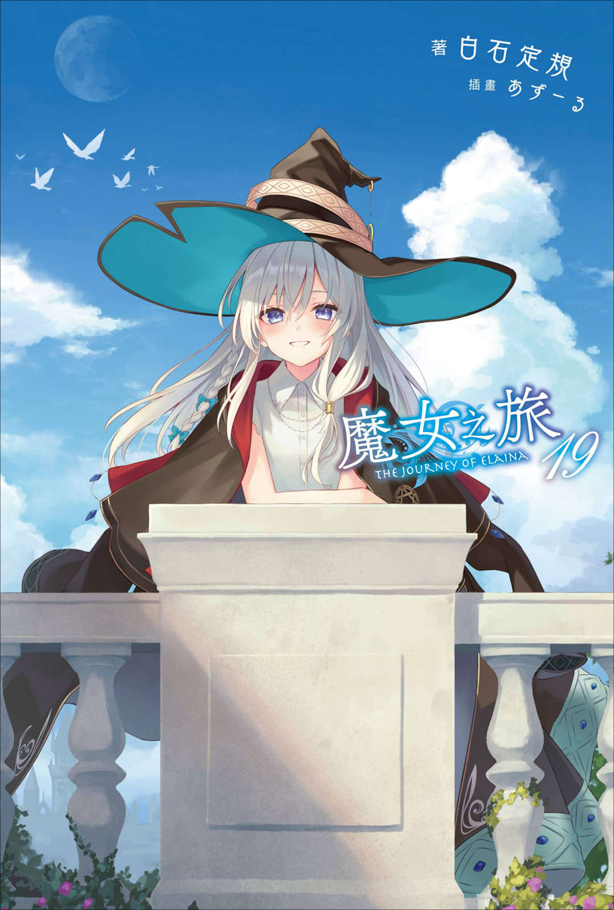

魔女之旅

原名:
魔女之旅
常用译名：
Wandering Witch: The Journey of Elaina
作者：
白石定规
插画：
あずーる
连载状态：
连载中
《魔女之旅》（日语：魔女の旅々）是由白石定规创作、あずーる插画的一部轻小说，并有Drama CD、漫画等衍生作品。
2014年在Amazon Kindle首次公开，2016年修正后单行本化。
日文单行本由SB Creative出版。
繁体中文版由青文出版社翻译发行。
作品自发行以来，深受读者喜爱
小说曾连续四年登上日本"这本轻小说真厉害"榜单，女主角伊蕾娜更是获得2021年世萌大会萌王称号
2019年10月19日，于「GA FES 2019」上宣布动画化决定。
TV动画于2020年10月2日至同年12月18日播出，全12话。